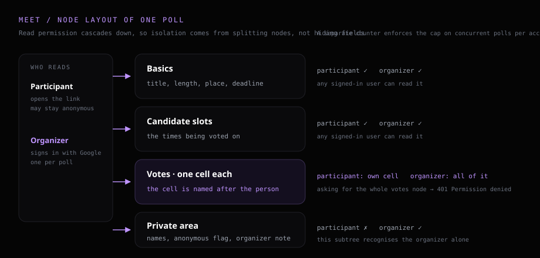

Booking a meeting for five people, the time actually goes into the thread asking “which day works for you”. This is how I compressed that into a single URL: the original idea, how the permissions were designed, and what I ran into.
I book a meeting now and then, and I have used a few of the scheduling services out there. Two things kept putting me off. One is the account: voting means signing up first, so someone answering a single question has to join another platform, and the data stays in that company's system. The other is the quota: free tiers keep a tight cap on how many polls can run at once, past which it is a monthly fee — and of the full row of fields in the interface, this situation uses barely any.
The actions I actually need come to three: open one, vote once, read the result. So I built Meet, on my own domain, with the data in my own database. What follows is the design as it was finalised on 2026-09-24.
# What I set out to build
The idea fits in a sentence: the organizer fills a form, gets a URL, drops it in the group chat, and whoever opens it votes and leaves. Participants sign up for nothing, install nothing, and stay on no platform.
The quota I handled from the other end. I set my own cap on how many polls can run at once, and closing one frees a slot — which keeps the whole thing inside the free tier and pushes me to tidy up finished meetings.
One more rule I added myself: a participant sees their own answer, the organizer sees all of them. Voting is the kind of thing where peeking at each other changes the answers, so this was a hard requirement from day one.
# Architecture: permissions start at the data shape
This took the longest and is the part most worth keeping. On a site with a backend, “who sees what” lives in the API: the request comes in, the identity is checked, and that decides which fields go back. Meet's frontend is static files on GitHub Pages, the browser reads and writes the database directly, and there is no layer in between to hide a decision in.
The data sits in Firebase Realtime Database, which carries its own permission file called Security Rules, declaring node by node who may read and who may write. My first draft kept everything under one subtree and used the rules to block a few fields. That road is closed: read permission cascades downward, so opening the parent opens everything beneath it. The approach moved from hiding a field to changing the shape of the data.

The third block is the one that matters: votes are stored one cell per person, each cell named after that person's identity, so a participant reads their own cell while the organizer reads the whole thing. Display names, the anonymous flag and the organizer's private notes all go into the private area, a subtree that recognises the organizer alone.
Permission is settled at the data-shape layer, one step ahead of any check bolted on afterwards.
# How the tool itself is put together
The organizer signs in with Google, fills in a title, meeting length, place or link, candidate slots and a reply deadline, and hits create to get a URL. Anyone who opens that URL lands straight in the voting view, with three states per slot: yes, needs notice, no. Leave your name if you want; a tap on “vote anonymously” submits without it.

Back on the same page, the organizer gets a four-colour bar, the reply count, and what each person picked. Someone's answer can be dropped entirely; once removed, they come back as though they had never voted and can vote again.
There is also a second way in. On my work machine sits a small tool of my own that reads calendars and works out the shared free slots; it encodes them into one pasteable string, and pasting that into Meet's create form expands it back into candidate slots, which saves typing them out. The two sides never talk to each other — the clipboard is the only thing between them.
# Where it got stuck
A cap that failed silently
For the cap on concurrent polls, my first version hung the check on the validation rule at the “one poll” level. The syntax was legal, the console was quiet, ordinary testing showed nothing odd — and then I deliberately pushed past the cap and found the rule had never run at all.
Validation rules evaluate only on the node actually being written and its descendants, and creating a poll lands the write one level further down:
one poll/basics <- the write actually lands here
one poll/ <- the rule hangs here, skipped entirelyMoving the count check down one level, so the rule lines up with the write path, is what made the cap start working. Security Rules have their own evaluation scope; a rule can be perfectly legal and still be skipped exactly where you assumed it would run.
Not seeing it on screen differs from not being able to read it
Verifying permissions by “I cannot see it on screen” verifies nothing, so the tests go around the frontend on purpose: spin up a second participant identity and hit the database's REST interface with its credential.
participant credential asks for the organizer's private note -> 401 Permission denied
same credential asks for everyone's votes -> 401 Permission denied
same credential writes its own cell -> OKThe value of this test is that it has nothing to do with the screen. Someone writing their own client against the same API gets the same answer from the database.
How far to run the line from the work network
The obvious move is to let that work-machine tool write the slots straight into Meet's database, at the cost of keeping a credential that passes the rules on a company machine. For a personal tool I chose to leave that line unconnected, and to exchange one signed string instead, shaped roughly like this (illustrative):
<version prefix>.<payload>.<signature>
payload = the slot list encoded into one pasteable string
signature = HMAC-SHA256 over the payload with a shared key, first few bytesHMAC computes a verification fingerprint over some data with a shared key; Meet recomputes it in the browser, and a match means the string survived the trip unaltered. The payload holds the slots alone — attendees, subject and busy details stay on the work machine.
The design carries one limitation I went in with eyes open: the key sits in the browser, findable with the developer tools. So what it guards against is a copy that lost a chunk, a paste into the wrong field, a few characters edited by hand, a format mangled in transit. Keeping the key away from participants would mean moving verification onto a server, and that version loses the backend-free, zero-cost, fully static shape this one has. Define what you are guarding against first, then decide how far to go.
# Finished, and still in use
From the user's side the whole thing comes down to three steps: open one, tick the slots, come back for the result. The group chat loses a round of “does Wednesday work”, and answering takes no new platform. I still open it every time I need to book something, and I will keep adding to it.
The idea underneath is the part worth taking away, and it is the same one as Whiteboard: a purely static site can enforce permissions, as long as the permissions are designed into the data shape. Participants cannot see each other's answers because everyone gets their own cell, and that holds at the database layer, whatever the interface happens to draw.
If you see a better way to do any of this, or a hole in it, I would like to hear. The code is public on GitHub — an issue, a PR or a star all reach me — and requests are welcome on the wish board.
# Links
- • Meet — open the tool
- • Whiteboard — the first tool on the same setup
- • Realtime Database Security Rules — official docs
- • GitHub — GHOST8787/blog
# Tech stack
- Frontend: vanilla JavaScript and Tailwind, no framework and no bundler
- Hosting: GitHub Pages
- Data and permissions: Firebase Realtime Database with Security Rules
- Sign-in: Google Identity Services, in-page, no popup
- Anonymous voting: Firebase anonymous auth, session kept in memory only
- Cross-system transfer: base64url with HMAC-SHA256, verified in the browser via the Web Crypto API
- Shared: same Firebase project and same rules file as Whiteboard, one top-level node each
The COOP header on GitHub Pages interferes with Google's popup sign-in flow, so this one signs in inside the page and exchanges the credential for an identity the database recognises. The whole thing runs on Firebase's free tier, whose published pricing page (checked 2026-09-25) leaves plenty of headroom at this usage.